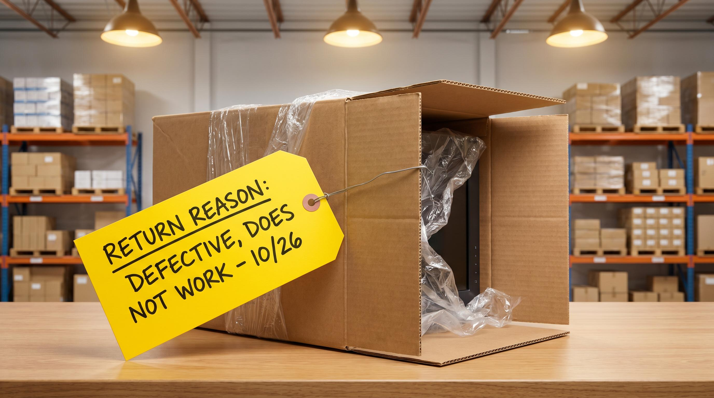

Returneringer koste penge. En retur koster typisk 60-160 kr. at håndtere, og for værens vedkommende er der en risk for, at den ikke kan saelges til fuld pris igen. Alligevel behandler mange webshops returneringer som noget der bare sker, en naturlig del af eCommerce man ikke kan gøre meget ved.
Det er forkert. De fleste returneringer kan forebygges. Ikke ved at gøre det sværere at returnere, men ved at losne de informationsgab der får kunden til at købe det forkerte i første omgang.
Her er de fem hyppigste arsager til returneringer og hvad du konkret kan ændre.
👉 SmartPack giver dig returarsags-data pr. produkt saa du kan prioritere den rette indsats. Se systemet
Grund 1: Forkert størrelse eller passform
Den hyppigste returarsag i mode, sko og kategorier med størrelsesvariation. Kunden købte en M, men den sidder som en S. Eller skoene er en halv nummer for smaa.
Hvad du kan ændre:
- Tilfoej et detaljeret maaltabel med cm-maal, ikke kun S/M/L. Vis bugmaaling, brystvidde og laengde eksplicit.
- Beskriv passformen: slim fit, regular, oversized. Vis på hvilken model (med højde og størrelse) produktet er fotograferet.
- Tilfoej kundekommentarer om størrelse i reviews: "Køb en størrelse op" er guld vaard for næste køber.
- Overvej et størrelses-quiz-vaerktoj eller chatbot der hjælper kunden med valget.
Grund 2: Produktet ser anderledes ud end på billedet
Farve der ser anderledes ud i virkeligheden. Et bord der virkede større på billedet. En kjole der draaperede anderledes end på modellen. Produktbilleder der ikke reprasenterer virkeligheden er en af de største returarsager og et af de nemmeste problemer at fikse.
Hvad du kan ændre:
- Fotografer produktet i naturligt lys eller med neutral baggrundsbelysning. Sterk studiefarvning forvanskser farver.
- Tilfoej kontekstbilleder: produktet i brug, i et rum, på en person. Det giver kunden en realistisk forestilling om skala og udseende.
- Tilfoej videoer eller 360-visning for kategorier med hojt returproblem.
- Tilfoej kundebilleder via reviews. Dem der har kobt produktet viser det som det faktisk ser ud i virkelighed.
Grund 3: Produktet lever ikke op til beskrivelsen
Materialekvaliteten er lavere end teksten antydede. Funktionen virker anderledes end beskrevet. Maalet er 2 cm fra det angivne. Kunden foler sig snydt og returnerer.
Hvad du kan ændre:
- Vaer præcis på materialer: "80% polyester, 20% elastan" er bedre end "bloed stof". Angiv vaegt pr. kvadratmeter hvis relevant.
- Maal dine produkter og angiv maalene eksplicit. Maalafvigelse er en af de største kilder til returneringer i boligindretning og elektronik.
- Undgå salgssprog der lover mere end produktet leverer: "ekstremt bloed", "professionel kvalitet", "luksus finish" er vage paastande der skaber høje forventninger.
Grund 4: Forkert vare modtaget
Plukkefejl på lageret. Kunden bestilte sort, fik blaa. Bestilte størrelse 42, fik 40. Disse returneringer koster dobbelt: du håndterer returren og du sender igen. Og du mister kundens tillid.
Hvad du kan ændre:
- Implementer scan-baseret plukning. En plukker der scanner varen foer den lægges i kassen, reducerer plukkefejl med 85-95%.
- Brug klare varelabler og lokationsbetegnelser på lageret. Forveksling sker oftere naer lignende varer er naboer på hylden.
- Tilfoej en pakke-kontrol inden forsendelse. Et ekstra oejenkast koster 20 sekunder og forhindrer en 100 kr. retur.
Grund 5: Kunden bestilte flere stoeerrelser med intention om at returnere
Den saakaldte "bracket buying": kunden bestiller størrelse 38, 39 og 40 og returnerer de to der ikke passer. Det er en strategi mange kunder bruger, særligt i kategorier med usikker størrelsesstandardisering. Du kan ikke stoppe det helt, men du kan reducere det.
Hvad du kan ændre:
- En præcis størrelsesvejledning reducerer behovet for bracket buying markant. Kunden behover ikke bestille tre størrelses naer de stoler på vejledningen.
- Overvej at markere kunder med meget høj returrate og haandhav din returpolitik konsekvent over for gentagne misbrugere. Det er legalt og oger effektivt.
- Tilbyd en online størrelsesvejledning eller chat-support: kunden der er usikker på størrelse, og kan sporgse, har mindre grund til at bracket buy.
Start med dine værste produkter
Du behover ikke fixe alt på een gang. Sorter dine produkter efter returrate, find de 10-15% med den højeste returrate, analyser returarsagerne for de produkter og start der. Den indsats giver typisk 30-50% reduktion i det samlede antal returneringer.